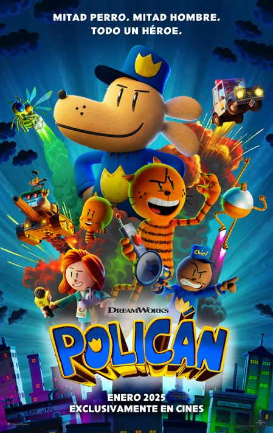
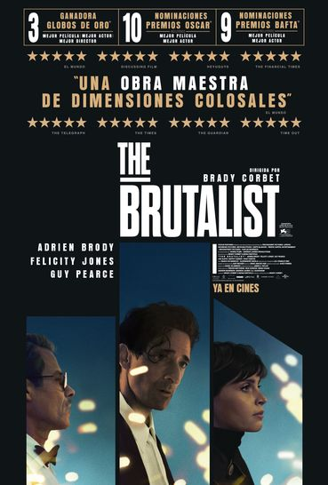

POLICIAN
SINOPSIS
Un perro y un agente de policía resultan heridos juntos en el trabajo. Una operación quirúrgica que les salva la vida cambia el curso de la historia cuando nace Policán. Mitad perro, mitad hombre, Policán ha jurado proteger y servir -siempre que no le distraigan las ardillas- mientras persigue tenazmente a su archienemigo: el supervillano felino Perico. Pero la rivalidad entre Policán y Perico se ve alterada por la llegada de un adorable gatito clon de Perico, Chikigato, que cambia las reglas del juego para ambos.

THE BRUTALIST
SINOPSIS
Huyendo de la Europa de la posguerra, el visionario arquitecto László Toth llega a Estados Unidos para reconstruir su vida, su obra y su matrimonio con su esposa Erzsébet tras verse obligados a separarse durante la guerra a causa de los cambios de fronteras y regímenes. Solo y en un nuevo país totalmente desconocido para él, László se establece en Pensilvania, donde el adinerado y prominente empresario industrial Harrison Lee Van Buren reconoce su talento para la arquitectura. Pero amasar poder y forjarse un legado tiene su precio...

LA ACOMPAÑANTE
SINOPSIS
Huyendo de la Europa de la posguerra, el visionario arquitecto László Toth llega a Estados Unidos para reconstruir su vida, su obra y su matrimonio con su esposa Erzsébet tras verse obligados a separarse durante la guerra a causa de los cambios de fronteras y regímenes. Solo y en un nuevo país totalmente desconocido para él, László se establece en Pensilvania, donde el adinerado y prominente empresario industrial Harrison Lee Van Buren reconoce su talento para la arquitectura. Pero amasar poder y forjarse un legado tiene su precio...

MUFASA:EL REY LEÓN
SINOPSIS
Precuela de 'El rey león' (2019). Cuenta la historia de origen del padre de Simba, Mufasa, explorando su infancia al crecer con su hermano Scar.